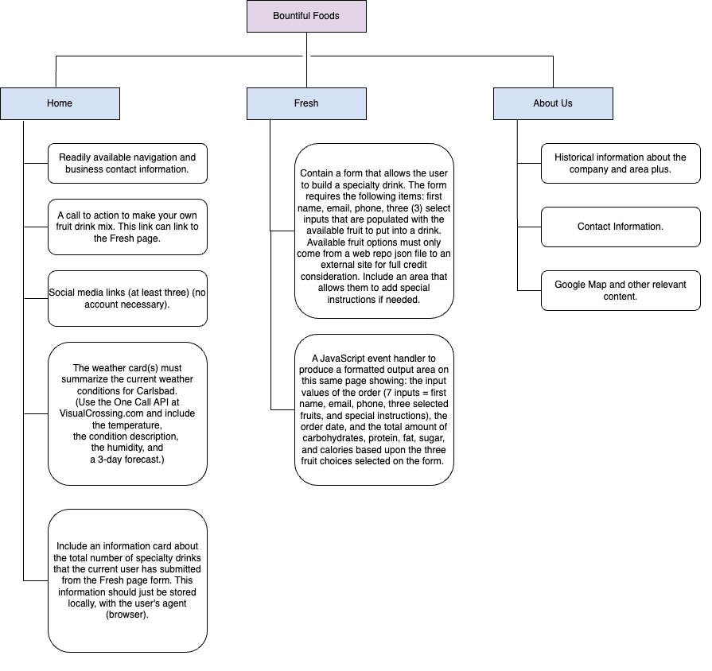
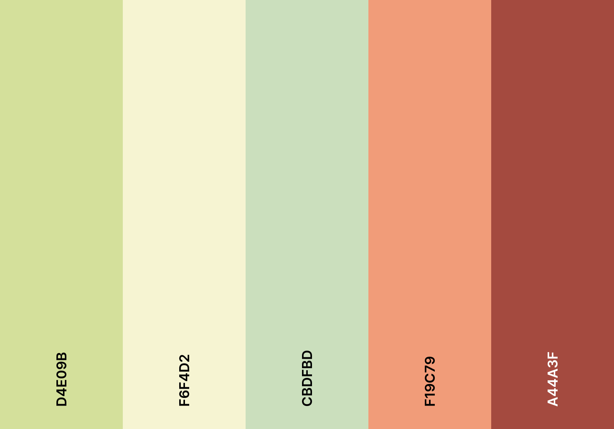
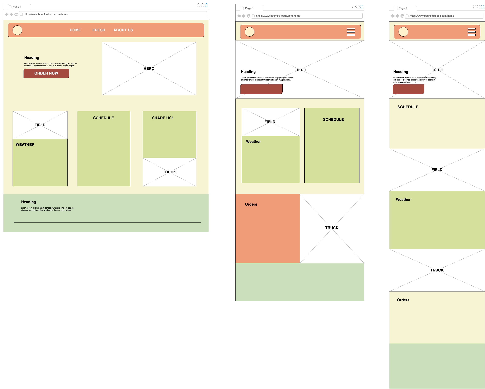

Logos


Target Audience
The target audience for Bountiful Foods is individuals who prioritize healthy eating and seek out fresh, organic, and locally sourced foods. This includes both locals and tourists in the coastal areas of Southern California. The company's mission to provide healthy food options that are convenient supports the theme of organic bounty and convenience. Busy professionals who value their health but have limited time to prepare meals at home are also part of the target audience. These individuals are willing to pay a premium for the quality and convenience of the products offered by Bountiful Foods.
Persona 1: Health-conscious local
This persona is a local resident of Carlsbad or a nearby town who values healthy eating and prefers to buy organic and locally grown foods. They may have specific dietary requirements, such as being vegan or gluten-free, and seek out specialty food stores like Bountiful Foods to find suitable products. They are likely to be regular customers who visit the storefront or food trucks frequently and may also order online for delivery. This persona is interested in learning about the source of their food and supporting local farmers.
Persona 2: Tourist looking for healthy options
This persona is a tourist visiting the coastal areas of Southern California who is health-conscious and seeks out fresh and healthy food options. They may have limited options for dining out due to dietary restrictions and want to avoid fast food or chain restaurants. They may come across Bountiful Foods while exploring the area and be drawn in by the organic and locally sourced products. They are likely to make a one-time purchase and may take advantage of the convenience of the food trucks to grab a quick and healthy meal while sightseeing.
Persona 3: Busy professional seeking convenience
This persona is a busy professional living or working in the area who values healthy eating but has limited time to prepare meals at home. They may use Bountiful Foods as a convenient option for grabbing a quick and healthy meal or snack while on the go. They may also order online for delivery to their home or office, taking advantage of the website's easy ordering system. This persona is interested in the convenience of healthy food options and may be willing to pay a premium for the convenience factor.
Site Map

Color Scheme

Typography
Bountiful Foods is awesome! - Arial
Bountiful Foods is awesome! - Gill Sans
Bountiful Foods is awesome! - Segoe UI
Wireframes
